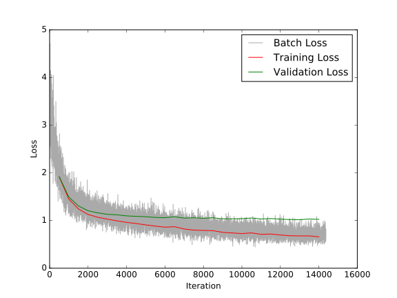

Unstructured text is hard to process and understand in large amounts. Typically this section of the data set is passed over in favor quantitative questions like "Rate your food on a scale from 1 to 5." Let's see if the world-famous deep networks can come to the rescue.
I grabbed a Yelp review data set from Kaggle that contained review text and star ratings. Here are some examples.
| Review | Stars |
|---|---|
| Good, imaginative food, excellent service and atmosphere. The duck empanada appetizer was the highlight. Wine list a little on the short side, Victoria beer on tap a plus and top self margaritas were good but over priced. Overall deserves 4.5 stars due to server Lauren. | 4 |
| Really? Not very professional and merely sub par. Tiny and cramped salon. No top coats for finger nails or toes and no scrubbing the balls of my feet. (Which is why most of us GO get a pedicure) Seemed like they wanted to sell me some all natural products, while trying to pull me in with their "fun" personality. Sorry, I'm going back to Capri Nails! | 1 |
| I really do like this place! I loove the pad thai! it's really filling and yummy! I don't care for the key lime pie, it's too sour for me. I also love the pear and baby spinach salad, that's always amazing! I've been going there for a couple of years now and is one of my favorite resturants. | 3 |
Most natural language processing algorithms operate on words rather than long strings of text so I first broke each of the reviews into sentences and broke the sentences into words. I found the Spacy library to be performant and accurate for this task.
Some reviews contained links and other non-word text
which I stripped using Spacy's is_oov function.
Convolutional Neural Networks are data processing algorithms that rose to fame after achieving impressive results in image processing. Sometime after this they also started to be used for text processing. These algorithms work by converting sentences into "images" through special vectors called embeddings that represent that meaning of a word.
For analyzing the Yelp review text, I started from a TensorFlow implementation by Denny Britz and made two modifications.
Each review is turned into cube with one dimension for the number of sentences, one for the number of words in a sentence, and one for representing the word meaning.
I trained the CNN using the first 40% of the dataset for training and the next 10% for validation. The remaining 50% wouldn't fit into memory.
I used root-mean-squared error to measure how well the model was fitting the data.
During training, I captured the batch error after every iteration. After 500 batches, I calculated the error for the entire training set and validation set.
After training finished, I had a validation error of 1.02, meaning the model is off by roughly 1 star.
Is this good?! Since this isn't for any specific application, it's hard to say. But we can try comparing to other approaches to gauge if this is reasonable performance.
Let's try a simple approach based on number of times key words appear in the review text. We might expect that words like "great" and "fantastic" appear more often in 5-star reviews. We can use these word counts as a numerical summary of the review and run a standard linear regression.
To find these important words, I used a Misra-Gries style algorithm to find the most frequent words for a fixed number of stars. This approach treats the words in the reviews as a stream, processing them one by one. This gives a fast and memory-efficient algorithm at the expense of some inaccuracy in the results.
Not surprisingly, the most common words in reviews are function words like "the", "a", and "I". To handle these, I removed all words which appeared in 4 or more star ratings. After this, I took the top ten words to find the key words for each star rating.
| 1 | 2 | 3 | 4 | 5 |
|---|---|---|---|---|
| said | two | try | love | love |
| her | said | ok | try | best |
| told | bad | bad | friendly | friendly |
| minutes | minutes | though | best | amazing |
| asked | theater | love | delicious | try |
| bad | hotel | burger | definitely | delicious |
| another | another | sauce | fresh | fresh |
| ever | ok | being | happy | ever |
| should | day | d | hour | awesome |
| took | drinks | chili | salad | favorite |
I collapsed these key words into one set and the counted their frequency in each review to build a feature vector. Using scikit-learn 's, I ran a linear regression of this feature vector on the star ratings using the same dataset as in the CNN approach.
This gave a training error of 1.09 and a validation error of 1.09.
So the fancy CNN did about the same as the simple word frequency approach. It's clear from the training errors that the CNN is over-fitting the training data which requires further investigation. Both methods could be improved further. I didn't spend any time in the dark art of network architecture design. Could fewer convolutional layers be better? Also, the frequency approach might benefit greatly from bigram counts in addition to unigram counts.
Both methods can be used to gain insights from the review text. In particular, we can investigate the weights learned during training to find features that the models think are important. Despite the CNN's more complicated structure, there are some promising ideas on how to interpret the weights.
The code used to generate the results in the post is available here .